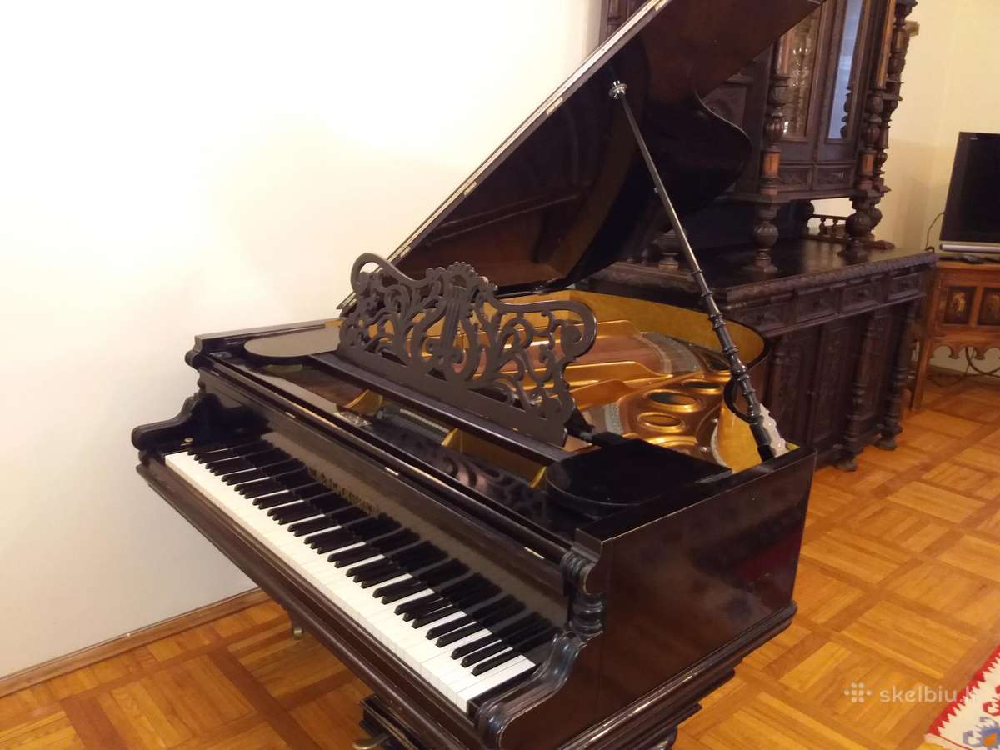

Fortepijonas
Utenos meno mokykla
www.menas.utena.lm.lt
Paieška svetainėje
0 1 2 3 Jūs esate čia: Pradžia Pedagogai MUZIKOS SKYRIUS Fortepijonas Naujienos Apie mus Struktūra ir kontaktai Veiklos sritys Korupcijos prevencija ADMINISTRACINĖ INFORMACIJA Tėvams Pedagogai DAILĖS SKYRIUS MUZIKOS SKYRIUS Fortepijonas Smuikas Pučiamieji Liaudies instrumentai Chorinis dainavimas Teorinės disciplinos Muzikinė saviraiška DIENYNAS Svetainės struktūra Ugdymas Konkursai mokykloje Mokyklos savivaldaNuorodos
Lietuvos Respublikos Švietimo ir mokslo ministerija Utenos rajono savivaldybė Švietimo, sporto ir jaunimo reikalų skyrius Vilniaus dailės akademija Nacionalinė dailės galerija Utenos muzikos mokykla (1964-2017) Kultūros naujienos UtenojeUtenos dailės mokykla (1976-2017)
Renginiai ir įvykiai Utenos dailės mokykloje Mokyklos istorija Mokyklos pastato istorija Utenos ir Utenos pašto stoties istorija PARODOS PLENERAI „Dailės žiedai 2012 m. gegužės 24 d. Nr.1 (2012)Spausdinti El. paštas
Fortepijonas
Kategorija: FortepijonasUtenos muzikos mokykloje fortepijonu groti mokosi virš 80 mokinių, dirba 8 mokytojai. Mokyklos jaunieji pianistai aštuonerius metus mokosi skambinti fortepijonu. Jie akompanuoja kitais instrumentais - smuiku, saksofonu, fleita ir kt. grojantiems mokiniams, muzikuoja fortepijoniniuose ir kameriniuose ansambliuose. Vyresnių klasių mokiniai gali papildomai mokytis griežti vargonais. Kasmet fortepijono mokytojų iniciatyva organizuojami du tarptautiniai konkursai. Nuo 2002 m. vykstančiam tarptautiniam fortepijoninių ansamblių konkursui „Muzikinės akimirkos“ 2016 m. suteiktas jo globėjos, LMTA profesorės Veronikos Vitaitės vardas. Mokykloje puoselėjamos fortepijoninių ansamblių tradicijos sukviečia į Uteną gabiausius Lietuvos ir kitų šalių jaunuosius pianistus. Kitas mokykloje jau tradiciniu tapęs konkursas „Mažieji talentai“ padeda atskleisti jaunųjų atlikėjų (iki 11metų) muzikinius gebėjimus. Konkursas sukviečia pačius mažiausius įvairiais instrumentais grojančius vaikus pademonstruoti savo muzikinius gebėjimus, pasisemti sceninės patirties ir pasiklausyti savo bendraamžių. Mokykloje vyksta ne tik ugdomoji, bet ir aktyvi koncertinė veikla. Fortepijono skyriaus mokytojai ir mokiniai rengia koncertus- teminius vakarus, koncertuoja rajono kultūros ir švietimo įstaigose, mokyklos tradiciniuose renginiuose, šventėse. Fortepijono mokytojai- koncertemeisteriai bendradarbiauja su rajono muzikos mokytojais, akompanuoja įvairiems muzikiniams kolektyvams. Gabiausi fortepijono klasės mokiniai atstovauja Uteną tarptautiniuose konkursuose. Mūsų mokyklos pianistai – Vokietijos, Italijos, Latvijos, Rusijos, Ukrainos konkursų laureatai ir diplomantai.
Spausdinti El. paštasELINA BARZDIENĖ
Kategorija: FortepijonasIšsilavinimas. Lietuvos edukologijos universiteto muzikos edukologijos magistrė ir anglų kalbos filologijos bakalaurė, Almatos valstybinio universiteto fortepijono specialybės absolventė.
Darbo patirtis. Utenos muzikos mokyklos fortepijono mokytoja, koncertmeisterė, Utenos kultūros centro solistė. Ugdydama savo auklėtinius remiasi muzikinio lavinimo naujovėmis, puoselėja kiekvieno vaiko muzikalumą, suteikia galimybę patirti muzikavimo džiaugsmą visiems besimokantiems skambinti fortepijonu.
Spausdinti El. paštasINGRIDA DIRMIENĖ
Kategorija: FortepijonasIšsilavinimas. Ingrida Dirmienė baigė Lietuvos muzikos ir teatro akademiją.
Darbo patirtis. Nuo 1991 metų dirba Utenos muzikos mokykloje fortepijono mokytoja, koncertmeistere. 1998 metais suteiktas mokytojos metodininkės vardas. 1996 – 2006 m. - fortepijono skyriaus vedėja. Stengiasi surasti ir atskleisti jaunųjų pianistų meninius gabumus, skatina juos dar atkakliau dirbti.
Konkursai, festivaliai. Jos ugdytiniai įvairių projektų, festivalių, respublikinių ir tarptautinių konkursų Lietuvoje, Latvijoje, Rusijoje, Italijoje, Vokietijoje I – III vietų laureatai, diplomantai.
Kita veikla. Organizuoja įvairius renginius, paskaitas, domisi profesijos naujovėmis, nuolat tobulina kvalifikaciją dalyvaudama seminaruose.
Spausdinti El. paštasAIDA DRIUKAITĖ
Kategorija: FortepijonasIšsilavinimas. Baigė Vilniaus Tallat-Kelpšos aukštesniąją muzikos mokyklą, fortepijono specialybę.
Darbo patirtis. Nuo 1988 metų dirba Utenos muzikos mokykloje. Jai yra suteikta fortepijono vyresniosios mokytojos kvalifikacinė kategorija.
Konkursai, festivaliai. Su mokiniais dalyvauja įvairiuose renginiuose, konkursuose, festivaliuose ir koncertuose.
Kita veikla. Kuria fortepijonines pjeses ir dainas vaikams. Organizuoja tarptautinius konkursus: Tarptautinis prof. V. Vitaitės fortepijoninių ansamblių konkursas; Tarptautinis instrumentinės muzikos konkursas „Mažieji talentai“.
Spausdinti El. paštasZITA LUKOŠIŪNIENĖ
Kategorija: FortepijonasIšsilavinimas. Mokėsi J. Tallat- Kelpšos aukštesniąją muzikos mokyklą (dabar Vilniaus konservatorija) vėliau baigė Lietuvos Muzikos ir teatro akademijos fortepijono, vargonų specialybes ir įgijo muzikos magistro laipsnį.
Darbo patirtis. Nuo 1989 metų dirba Utenos muzikos mokykloje mokytoja. Jai suteiktos mokytojos metodininkės ir koncertmeisterės ekspertės kvalifikacinės kategorijos.
KIta veikla. Nuo 1997 metų kasmet organizuoja Aukštaitijos vargonų muzikos festivalį, yra jo direktorė ir meno vadovė. Daug koncertuoja kaip solistė vargonininkė ir akompanuoja žymiems Lietuvos atlikėjams, veda muzikines radijo laidas.
Zitos Lukošiūnienės mokiniai - pianistai ir vargonininkai nuolat dalyvauja konkursuose ir festivaliuose Lietuvoje, Lenkijoje, Latvijoje. XX Nacionaliniame B.Dvariono jaunųjų pianistų ir stygininkų konkurse trys vyresniųjų klasių ugdytiniai tapo diplomantais.
Moksleiviai daug koncertuoja mokyklos renginiuose, rajono ugdymo įstaigose, bažnyčiose.
Spausdinti El. paštasLAURA RAUDŽIUVIENĖ
Kategorija: FortepijonasIšsilavinimas. 2001 m. Lietuvos muzikos akademijoje suteiktas magistro laipsnis, solisto, koncertmeisterio ir pedagogo kvalifikacija.
Darbo patirtis. Nuo 2001 m. Utenos muzikos mokyklos mokytoja ir akompaniatorė.
2003 m. suteikta vyresniosios koncertmeisterės kvalifikacinė kategorija, 2004 m. suteikta vyr. mokytojos kvalifikacinė kategorija.
Konkursai, festivaliai. Mokiniai dalyvauja šalies ir miesto pianistų ir įvairių kamerinių ansamblių konkursuose, festivaliuose ir koncertuose. Yra pelnę prizinių vietų ir diplomų.
Kita veikla. Skatina mokinius lankytis koncertuose kuriose susipažįsta su naujais kūriniais, plečia savo akiratį.
Akompanuoja chorams, ansambliams, solistams. Koncertuoja kaip kamerinės muzikos atlikėja ir koncertmeisterė.
ROBERTA SAIFULINIENĖ
Kategorija: Fortepijonas Išsilavinimas. 1977 m. baigė Kauno J.Gruodžio aukštesniąją muzikos mokyklą ir įgijo VMM fortepijono mokytojos kvalifikaciją.
1989 m. suteikta fortepijono vyresniosios mokytojos kvalifikacinė kategorija.
Darbo patirtis. Nuo 1976 m. dirbo Kėdainių muzikos mokykloje koncertmeistere, fortepijono mokytoja. Nuo 1993 m. Utenos muzikos mokyklos fortepijono mokytoja.
Konkursai, festivaliai. Konkursai, festivaliai 1979 m., 1981 m., 1984 m., 1986 m. ir 1989 m. mokiniai dalyvavo B. Dvariono jaunųjų pianistų konkurso respublikiniame ture, o 1986 m.- tarptautiniame konkurse.
2001 m. ir 2003 m. dalyvauta tarptautiniame kamerinių ansamblių festivalyje „Sąskambiai”, jaunųjų atlikėjų festivalyje „Aukštaitijos viltys”.
2002 m. ir 2003 m. dalyvauta respublikiniame muzikos mokyklų fortepijoninių ansamblių festivalyje „Muzikinės pavasario akimirkos”.
LOLITA STARKUVIENĖ
Kategorija: FortepijonasIšsilavinimas. 1981 m. Utenos muzikos mokyklos fortepijono klasė.
1985 m. Vilniaus J.Tallat-Kelpšos aukštesniosios muzikos mokyklos fortepijono ir koncertmeisterio specialybės kursas.
1993 m. Šiaulių Pedagoginis institutas Muzikos pedagogikos kursas.
1999 m. suteikta vyresniosios koncertmeisterės kvalifikacinė kategorija
2002 m. suteikta vyresniosios fortepijono mokytojos kvalifikacinė kategorija
Darbo patirtis. Nuo 1985 m. Rokiškio kultūros mokykla, koncertmeisterė ir fortepijono mokytoja
1996 m. Utenos muzikos mokyklos fortepijono mokytoja, koncertmeisterė.
Kita veikla. Akompanuoja įvairiems mokyklos kolektyvams, smuikininkų ansambliui.
Joomla templates by a4joomla